Simulation tools MELSOFT Gemini

Equipped with abundant functions and able to be utilized in a wide range of applications.
Feature
Layout Configuration
Intuitive operations for quick and easy layout. Enables detailed parameter adjustment (dimensions, speed, color, etc.).
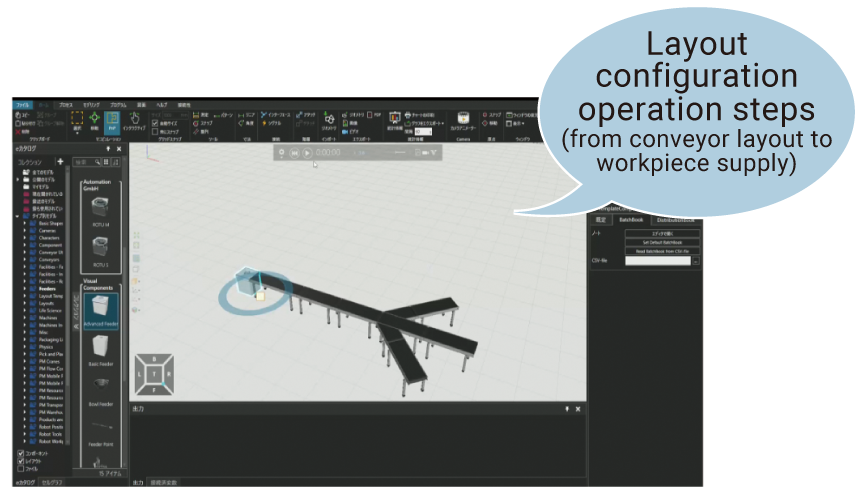eCatalog
Standard content consists of approx. 3,000 components able to be arranged with mouse operations. Components that can be used in eCatalog
Major components and quantity thereof
| Parts | Quantity |
|---|---|
| Robots* | 1773 |
| Robot tools | 91 |
| Conveyors | 58 |
| Processing machines | 34 |
| Machine accessories (loaders/unloaders) | 16 |
| Feeders | 20 |
| AGV/AMR | 45 |
| Facilities (desks, fences, racks, etc.) | 122 |
| Layout samples | 54 |
*Major manufacturers: Mitsubishi Electric, FANUC, YASKAWA, KAWASAKI Robotics, KUKA, ABB, etc.
CAD Import
Standard function for importing CAD files of major CAD vendors (Autodesk®, Dassault Systémes, PTC®).
*Please see specifications for supported versions and other details.
File types able to be imported
3D Manufacturing Format 3D Studio ACIS ASCII Point Cloud file Autodesk FBX Autodesk Inventor Autodesk Naviswork Autodesk RealDWG Binary point cloud file CATIA V4 CATIA V5 CATIA V6 COLLADA Creo GL Transmission Format I-deas IFC2x IGES lgrip/Quest/VNC JT Parasolid PRC Revit Robface Rhino Solid Edge SolidWorks STEP Stereo Lithography (ASCII and Binary) U3D Unigraphics (Siemens PLM software NX) VDA-FS VRML WavefrontImport 2D Drawings
Elaborate layout design is possible by arranging components on imported floor maps and other 2D drawings.
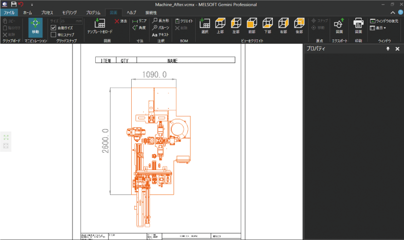Point Cloud Data Import
Current facility layout is imported as point cloud data to enable verifications for layout change, etc.
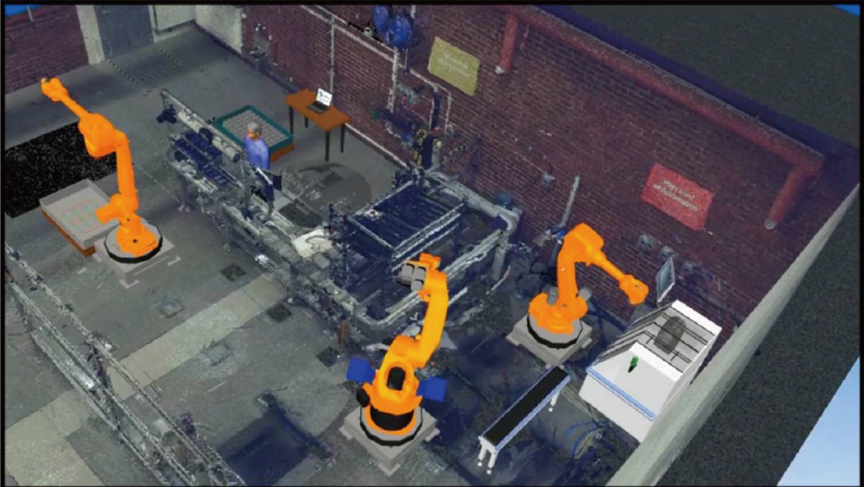Statistics
Displays simulation statistic results in various chart and analyze to confirm bottlenecks and changes in operational information. Data can be exported as either a PDF or Excel® file.
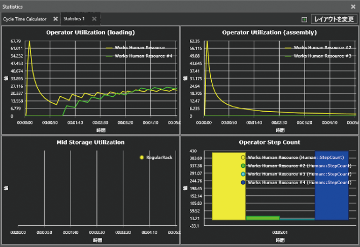Robot Teaching
A simply, easy-to-use robot teaching tool makes it easy to define robot operations.
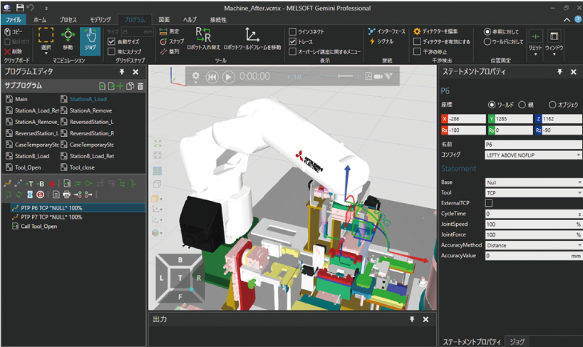MELFA-BASIC Program Exporter
Possible to automatically generate a MELFA-BASIC program for a Mitsubishi Electric robot on which teaching has been completed in a 3D model.
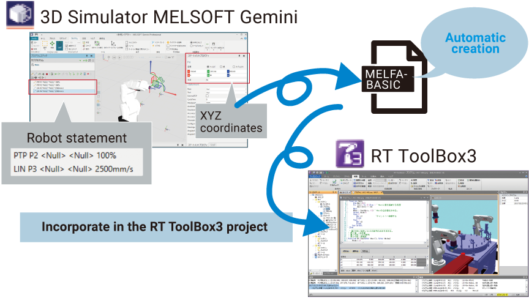Sales Content Creation
(video, animation, 3D pdf)
Data can be exported in various formats including still images, 3D pdf, and 2D drawings for use as technical documents and presentation materials. Can also be reproduced as a video using free viewer software.
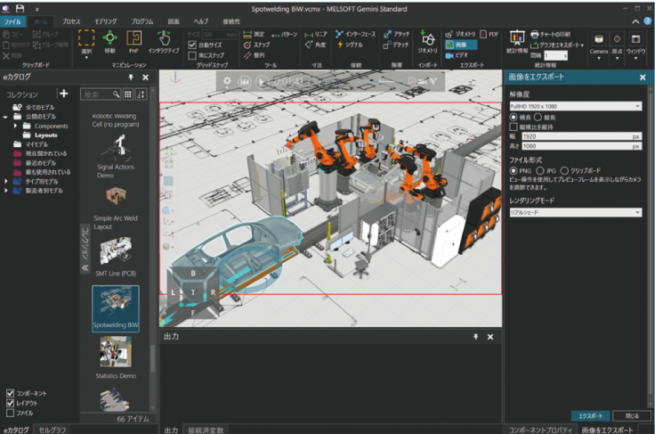Animation VC Experience
(free viewer/app)
Simulations can be shared and experienced in VR (virtual reality) or via smartphones.
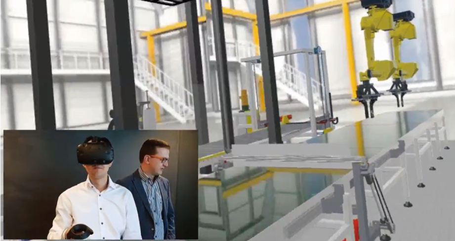Process Modeling
Create workflows of manufacturing processes with intuitive operations. Component flow can be set with minimal programming.
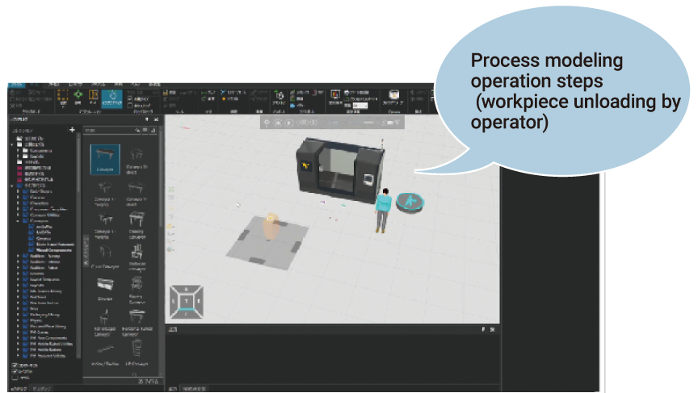PLC Connectivity
3D models can be directly connected to Mitsubishi Electric’s PLC and even connected to other companies’ PLCs via an OPC Server.
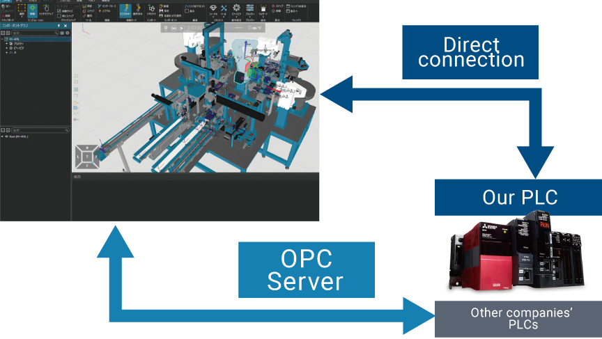CSV Import/Export Connectivity Variable Pairing
After exporting the 3D model variables and their links in the device memory of the connected Mitsubishi product (variable pair) to a CSV file, the entire file edited in Excel®, etc. can be imported.
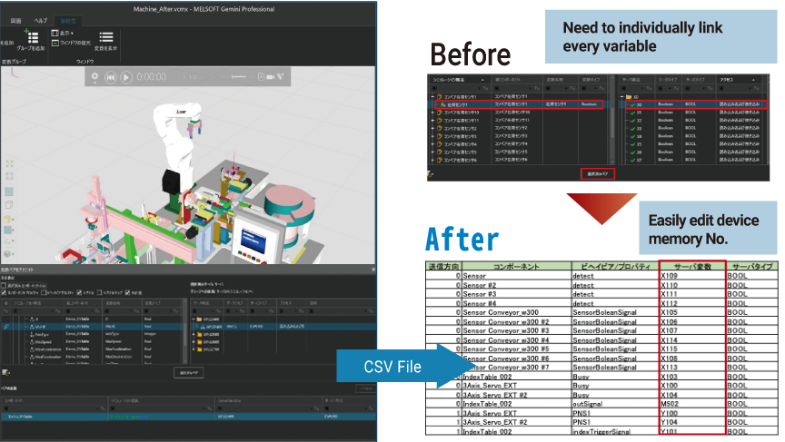Component Modeling
Imported 3DCAD data can be operated on Simulator after adding mechanisms and setting operations.
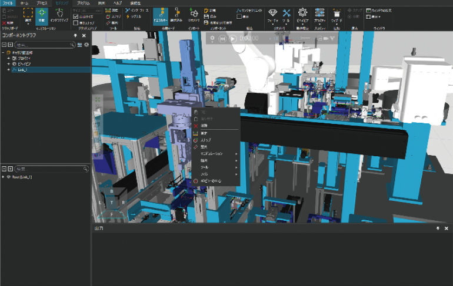Wizards for Component Modeling
Easy wizard setup of operations for robot hands, conveyors, etc.
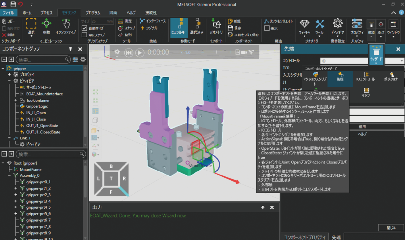Wizards for Mechanism Setting
Wizards allow easy setup of properties, links, and Python scripts necessary for mechanism setting.
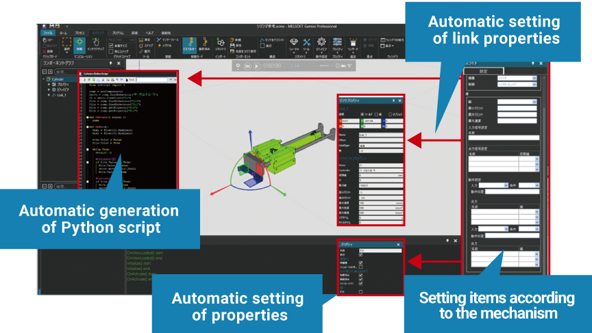Basic Solid Geometry
Basic solid geometry tools makes it possible to create 3D models and modify imported CAD data with ease.
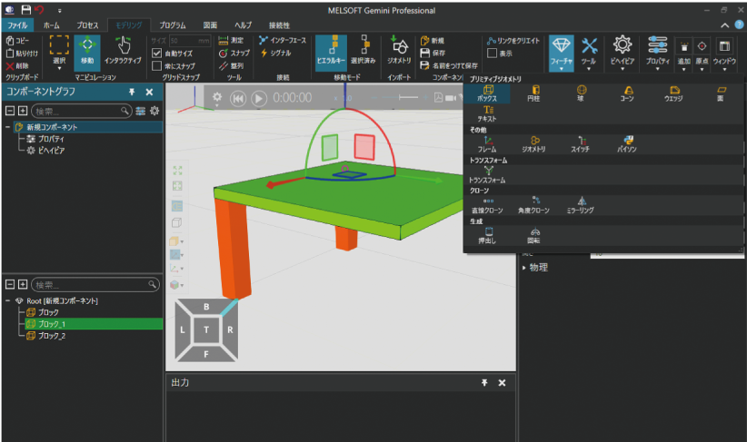Geometry Simplification
Reduces file size by simplifying models to enable light simulation operations.
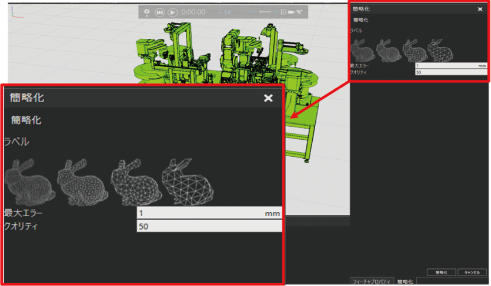Physics Simulation
Workpiece behavior is produced more realistically by simplified physical settings for contact, friction, repulsion, etc.
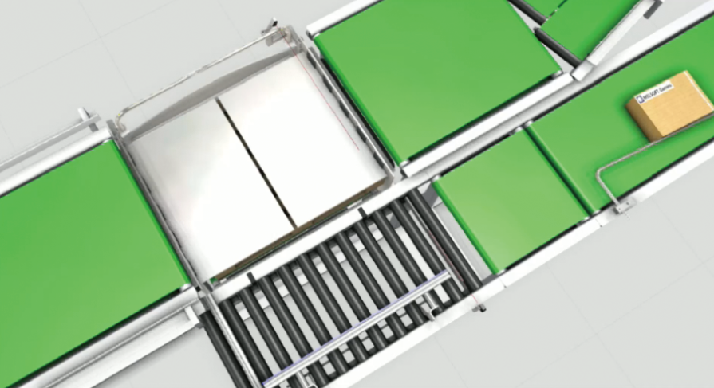Robot/Advanced-PLCs Connectivity
Debugging and verification of control programs is possible by connecting 3D models to the actual robot controllers*1, PLCs*2, and simulators
*1: KUKA, ABB, FANUC, UR, Stäubli, Doosan
*2: Siemens